All aboard
How we redesigned onboarding for Kaizen, and how the design itself made the team commit to building something operationally hard.
TLDR
- Kaizen: marathon training app, co-founded with two others
- Grew to 10,000 downloads with €0 marketing in year one
- Trial-to-paid conversion below average for the category
- Onboarding was the biggest lever to fix it
- Onboarding was functional but generic
- Had to do two jobs: get users through quickly AND demonstrate value of an unfamiliar concept
- Team debate between fast onboarding and thorough onboarding led nowhere
- Every option we'd considered still felt forgettable
- Stepped back to find a different answer
- Realised onboarding should feel like the start of a journey toward race day
- Built it around the landscape illustration we already had, expanded into a sense of progression through terrain
- Each step felt like part of a real journey, not a checklist
- Signature onboarding that set the tone for the whole product
- Opened up later decisions (notifications, autonomy, retention)
- Gave the team a creative direction to keep building against
- Convinced the team to commit to a heavier build than they'd planned
- Founding designer, end-to-end
- Research, customer support, synthesis
- Creative direction
- Interface design and prototyping
- Articulation to the team
What we had already
We built Kaizen from scratch, zero customers, no design, developers learning on the job. Within a year we'd hit 10,000 downloads with nothing spent on marketing.
Early on we figured out a simple way to grow. Kaizen could predict your marathon time more accurately than anything else on the market using data pulled from Strava. I spent 2-3 months, about an hour and a half a day, posting in Strava groups (links still worked back then). Highly motivated runners saw what Kaizen could do and downloaded it. €0 outlay, 10k+ downloads, €0 to 3k MRR.
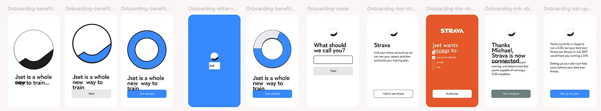
Which, honestly, was a huge growth hack and felt exhilarating. 10k downloads for nothing is the kind of thing most apps would kill for - it's also where most consumer apps die, the first 5k.
So our onboarding was, to put it nicely, functional. What mattered most for converting a download to a trial was that the app actually worked - stable, fast, and reliably got someone from A to B.
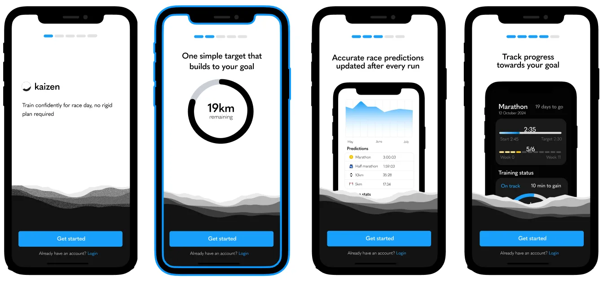
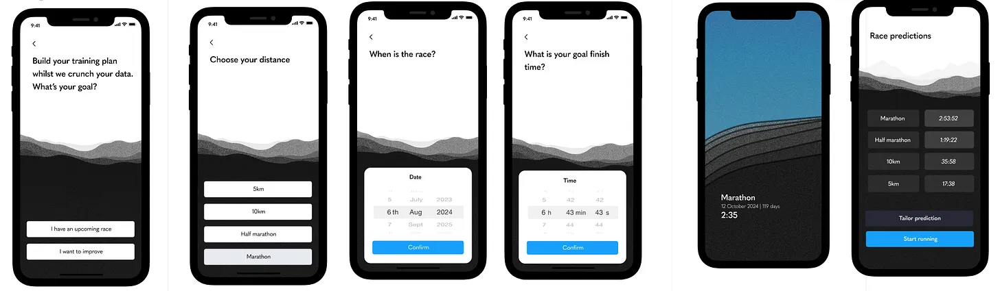
That was fine while we were growing through one channel to one kind of user. But trial-to-paid conversion was below average for a fitness app, and when we dug into the data the biggest lever was clear: we needed more trials to subscribe. Onboarding was leaving value on the table.
The real problem
Kaizen’s selling point was that it made marathon training simple and transparent in a way other apps didn’t. Most training apps give you a generic plan and hope for the best. If you miss sessions, tough luck, fit them in later, and oh by the way we have no idea how fit you actually are despite all this effort.
Kaizen worked completely differently. It used a core principle of endurance training: that pace and distance combine to create a measurable training load, and that load when measured against your current fitness is what predicts race performance. So instead of a static plan, you got a weekly target calibrated to where you actually were, adapted after every run, with a high chance of hitting your race goal.
The catch: this didn’t match the mental model most runners have of training. People expect “here’s your plan, follow it.” Kaizen was offering something better, but stranger. Which meant onboarding had to do two things at once: get someone through download to trial without losing them, and demonstrate enough of the underlying value to convince them to pay for something that didn’t look like what they expected.
What I knew going in
One thing worth mentioning: I’d been doing a lot of customer support myself. Walking people through their Strava connections, talking them through why their prediction seemed wrong, often answering the same questions over and over. Time-consuming, but it meant by the time we came to redesign onboarding I knew exactly what people got confused by, what they expected, what made them light up, and what made them quietly disappear.
I also talked to people who’d onboarded successfully but churned, and to early adopters at different stages of using the app i.e. early, mid, and post training block - to understand how their relationship with Kaizen actually unfolded over time. A lot of useful stuff came out of those conversations, but one finding mattered more than the rest: a huge proportion of our users were on Garmin or other wearables, not just Strava, and the lack of clean integration was a clear reason people dropped off in onboarding. They’d hit the Strava-only setup, realise their data lived elsewhere, and quietly leave.
That research helped shape what came next.
What I did
As founders we always had very different opinions about what to do next, and onboarding was no exception. The debate broadly fell between two extremes.
One camp: don’t waste anyone’s time, get them through as quickly as possible, save the high-value moments for the 1-week trial.
The other: take the time to explain the product properly, build a longer process that captured user context without losing the moments that mattered, their prediction data especially (incidentally many high performing onboarding flow’s are insanely long).
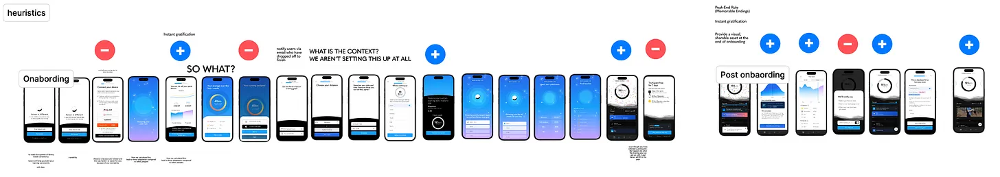
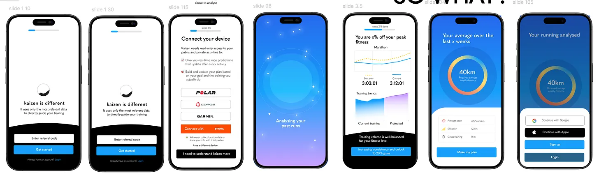
We worked through it the way you’d expect. Iterating on lower-fidelity design, looking at high-performing onboarding from within our sector (meditation, strength training, other running apps) and well outside it (porn addiction recovery apps were surprisingly relevant). Short user interviews. Prototypes shared with current and new users. All synthesised of what we thought the UX should be.
I time-boxed the discussion so we didn’t get bogged down. But by the end of it, what was clear to me was that we were still proposing something that was essentially functional.
It didn’t connect - at all - to the aspiration a person has when they decide they want to run a race. There was no impactful, unique first impression. Nothing that would set Kaizen apart from every other option in a category full of decent-but-forgettable apps.
So I decided to step back and figure out how to do that. Because I think the answer would set the tone, not just for the rest of the experience, but for what onboarding UX we ended up choosing in the first place.
Our team worked remotely, but it happened that for one week we were going to be together in person - at exactly the moment I was asking myself how to make this actually outstanding. That helped. I had a week to come up with a response and produce the design that would convince the team in the room.
The questions I was asking were a mix of hard-edged and soft. What if I’d never seen Kaizen before - what have I never really seen in an onboarding like this, and would it be achievable? I’ve been looking at this same design for months, how do I make it come alive, for me let alone a stranger? Can I evolve or elevate something from our existing design language? If I only did one thing here -would that shift conversion by 10%?
I’d like to say I sketched things out, played around in Figma. I did. But honestly, the answer came while I was on a run.
How did I know it was the answer? I felt exhilarated. A bit like when we hacked the first 5k of users, it was a puzzle that I suddenly felt I had a cheat code for, and once it was unlocked, the design itself was relatively easy to generate. (There were a few technical things to figure out about exporting the SVGs so they stayed small, but never mind that.)
Here’s what had been sitting with me for months. The thing people really care about when they talk to you is this: is this thing, this non-intuitive, slightly weird app actually going to get me to the start line of a marathon ready to race, ready to hit the time I want? Trust matters. (This is incidentally why people like prescriptive plans even when they’re worse, they feel like a promise.)
So why not lean into that? The idea that the user was on a journey, and the journey at least in part, started here in onboarding. As they progressed, they’d have a felt sense of that progress moving through a landscape. The landscape would change and adapt to different moments: seeing how fit they were, how much they’d need to run each week to stay on track, where they were heading.
Why it was convincing
My own sense of exhilaration was all well and good, but I still needed to convince the team. This was going to be a heavy lift. We could do something simpler, move on and get into the detail of improving trial-to-subscription, which was arguably a bigger lever to pull. So here’s what I tried to get across.
The energy I felt from this design was the same energy people needed to feel every time they used the app. A sense of momentum. That the training they were doing, and the way Kaizen was reflecting their progress back to them, made them feel, tangibly, that they were on the right track. That they had real potential, and that they were keeping their motivation, before, during, and after their race. Kaizen wasn’t only for people running races; it was also for people who wanted to improve their fitness more generally. Which meant this also tapped into a huge retention challenge that almost no app in the category handles well, Strava included. Incidentally, there was a lot of overlap with some big changes we had made to the dashboard — read it in Answering the wrong question.
The other thing: we should use something we already had. The landscape background in the dashboard. We’d expand it, build it out, so that even someone who wasn’t deeply into running would want to see what the next screen promised. The onboarding journey would unfold like a training block of its own, something unknown a each step, with high points and quieter moments, but always building. That was the blueprint. Our promise to help the user succeed had to be felt after every click and every interaction. And it had to start in onboarding.
A few things were non-negotiable for me, and I made the case for each:
Take into account where things stand in terms of competitor landscape, and kaizen’s current and future USP
Let the product talk for itself, FFS don’t over explain it
Add a wider set of API integrations - Garmin especially. We knew this was a big drop-off point.
Connect users much earlier to Kaizen’s secret sauce: the prediction but do a much better job to explain why they had to connect their data, since this was another major drop-off point.
Add robust SSO later on so account creation got out of the way and were placed strategically, so they fed into the user’s growing sense of progress.
Have the app actually build something for the user as a reward for completing onboarding, setting them up for the paywall friction.
I walked them through the whole flow and summarised why we were going to do this. There were notes, of course, my screen copy wasn’t perfect and there were a few hang-ups about the exact story we were telling and how to implement it. But by the end, my co-founders and the team had come to the same conclusion I had: of course we’re going to fucking do that.
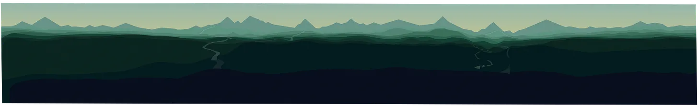
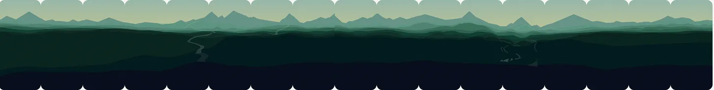
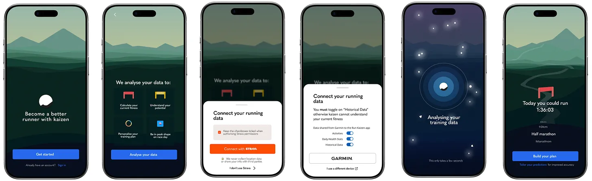
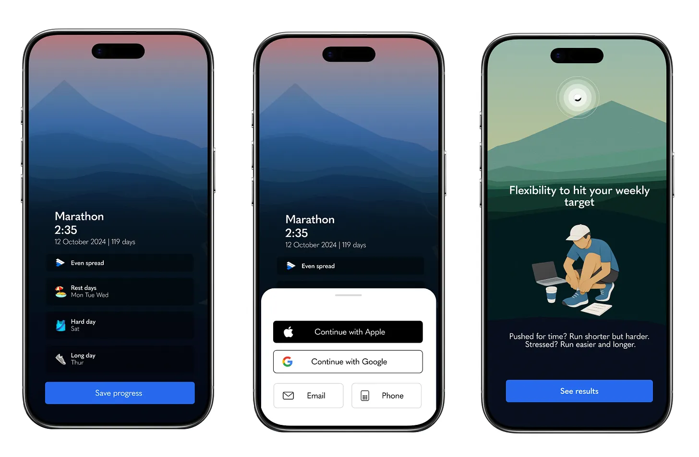
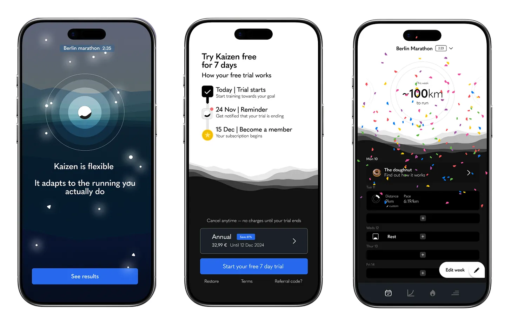
What this opened up
The decision didn’t just evolve onboarding. It started to guide what came next e.g. clarify what could move out of onboarding and live elsewhere in the app. Notification permissions, for example, could happen after the user’s first run rather than upfront. The choice of which notifications to receive could come later still - fitting into a wider vision of where we take kaizen, because autonomy was a key part of the journey we wanted users on. The arc was about moving people from extrinsic triggers (the app pinging them) to intrinsic signals (their own motivation). Onboarding was the starting point.
The onboarding itself was still far from its best. We still needed to speak more directly to specific user contexts. We could unify the visuals so the result screens behaved more consistently and better across devices. The paywall needed real design work - previewing, day by day, what the user could expect to see and how it would help them. how could we trigger a bigger emotional arousal without asking the user to really have to think about their results.
But those were incremental improvements. They came later. What this work had done was set the direction and the standard for everything that followed.
This is the kind of work I love to do, coming into messy, product led problems where the obvious answer is fine but the right answer is somewhere else, and finding the version of it the team will commit to building. If you've got something like that on your hands, I'd love to hear about it.
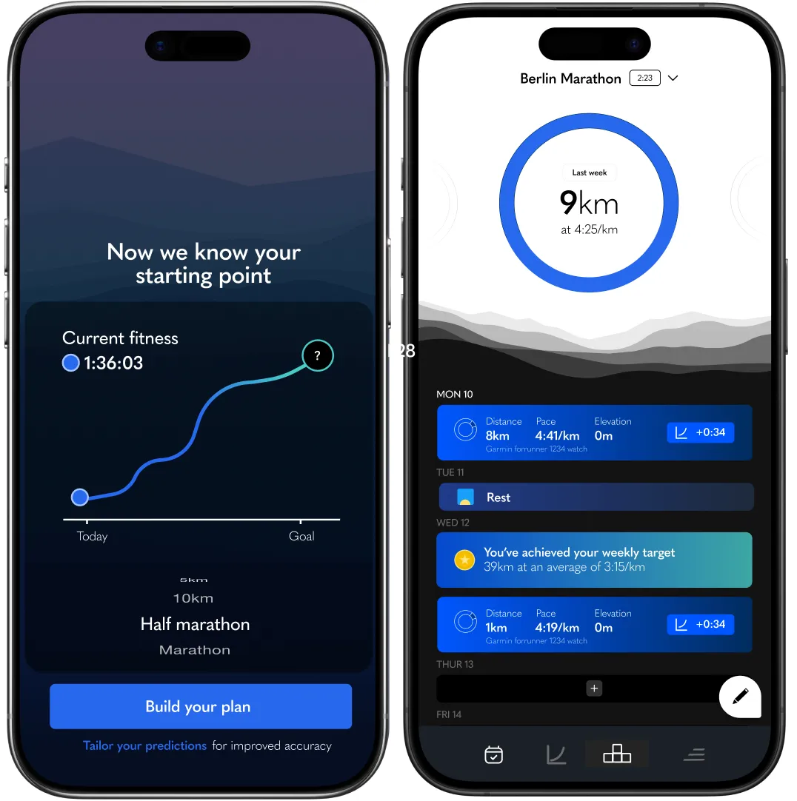

Originally published on Substack.